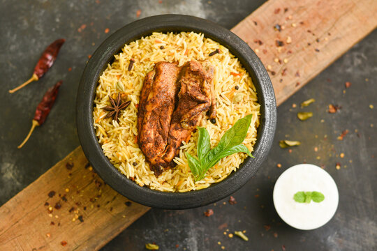

Mandi

Description
Mandi (Arabic: مندي) is a traditional dish that originated from Hadhramaut, Yemen consisting mainly of meat and rice with a special blend of spices, cooked in a pit underground.
It is extremely popular and prevalent in most areas of the Arabian Peninsula, and even considered a staple dish in many regions.
It is also found in Egypt, India, the Levant, Hyderabad Deccan and Turkey.
Mandi is usually made from rice, meat, and a mixture of spices. The meat used is usually a young and small sized lamb to enhance the taste further.
The main thing which differentiates mandi is that the meat is cooked in the tandoor, which is a special kind of oven.
The tandoor is usually a hole dug in the ground and covered inside by clay.
To cook mandi, dry wood is placed in the tandoor and burned to generate a lot of heat turning into charcoal.
Then the meat is suspended inside the tandoor without touching the charcoal.
After that, the whole tandoor is closed without letting any of the smoke outside.
Ingredients
- Chicken 1 kg (big pieces)
- Tikka masala ala/Tandoori masala/ Bihari kabab Masala 4 tbsp
- Ginger garlic paste 2 tbsp
- Yogurt 1/2 cup
- Lemon juice 4 tsp
- Salt 1 tbsp
- Red food color a pinch
- Oil 1/2 cup
Steps
- Grind mandi masala spices and keep them aside.
- Marinate chicken with all ingredients except oil and 4 tbsp mandi masala for a minimum 1-hour maximum as much as you want.
- Remove from heat and make sure there is no water remaining (as yogurt will leave some water, so you have to keep checking flame, the chicken should be dried).
- Put oil in a pot, add cardamom, cinnamon, and onion, fry till onion gets
golden, and add garlic, garam masala, and fry for a minute then add chicken stock (just enough that about an inch is above the rice).
- Bring to boil, add soaked rice, and cook on high flame for 2 minutes
then medium flame till water dries, put on dum, sprinkle green cardamom powder and saffron on top.
- Blend all chatni ingredients in a blender, add little water if desired
- Spread rice in a dish, put the chicken on top, and serve with chutney and salad.